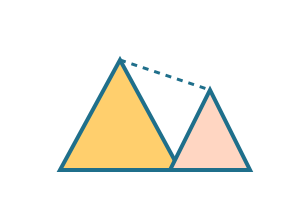

מה לומדים?
- צורות דומות: אותו צורה, גודל שונה.
- יחס קנה מידה בין צלעות.
- חוק פיתגורס במשולש ישר־זווית.
דוגמאות קצרות
אם צלע של משולש הוגדלה פי 2, מה יקרה לשאר הצלעות?
משימה ידנית
ציירו משולש ישר־זווית עם צלעות 3, 4, 5 וסמנו את הניצב והיתר.
בודקים יחסים ומגלים את הקשר בין הצלעות.

אם צלע של משולש הוגדלה פי 2, מה יקרה לשאר הצלעות?
ציירו משולש ישר־זווית עם צלעות 3, 4, 5 וסמנו את הניצב והיתר.